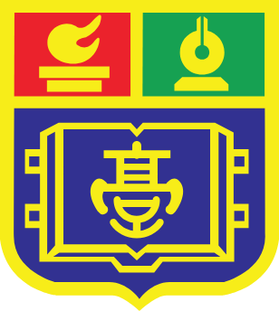
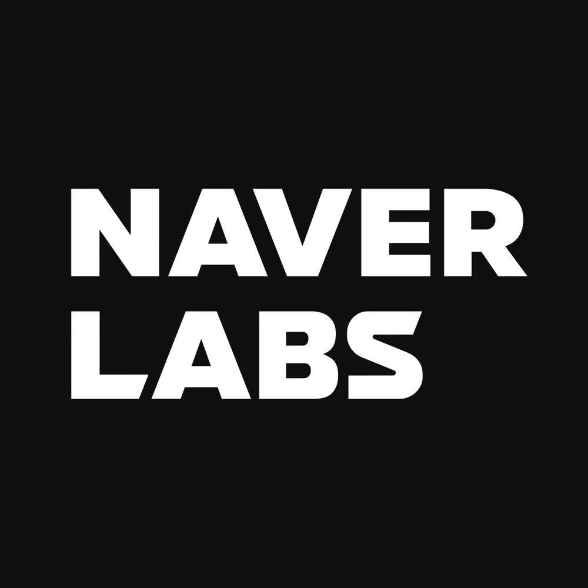

GeoAI, Digital Twin, Smart City
2007. 07. 01
서울특별시 송파구 / 동대문구
QGIS
공간 행정 및 지리 데이터 교차 분석, 정밀 시각화
ArcGIS Pro, Python, VS Code
지리정보 빅데이터 자동화 처리 및 분석 환경 구축
Mapsee (지리학과 GIS 학회)

2026. 02
공간데이터 및 심화 통계·수학 탐구 이수
2026. 03 - Present
지리학과 및 소프트웨어융합학과 복수전공 진행

Master's Path
지리학 석사 / 딥러닝 기반 공간 분석 심화
Doctoral Path
지리학 박사 / GeoAI 스마트시티 글로벌 펠로우

Goal & Vision
네이버랩스 디지털트윈 / 현대자동차 SDV 핵심 연구원
스마트시티 구축을 향한 학술 탐구 및 공동 프로젝트 문의를 환영합니다.
아래 버튼을 눌러 이메일로 연락주시면 최대한 빠른 시일 내에 회신드리겠습니다.
Collaborate & Contact →